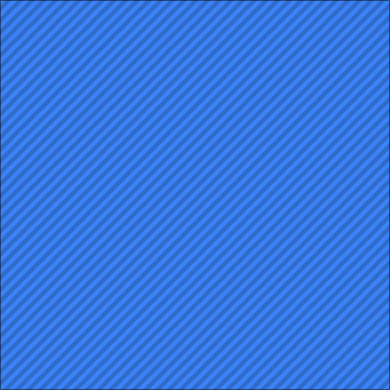
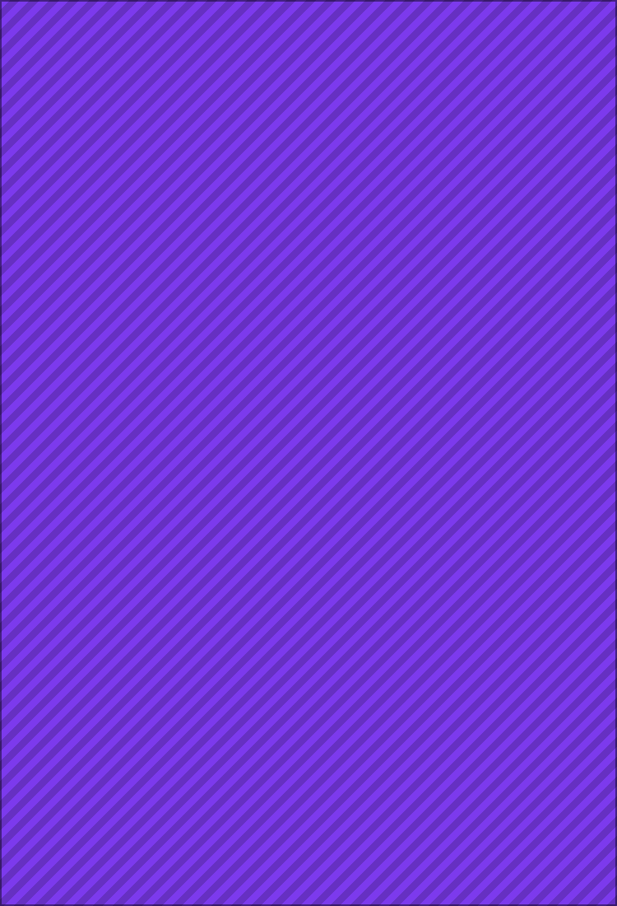
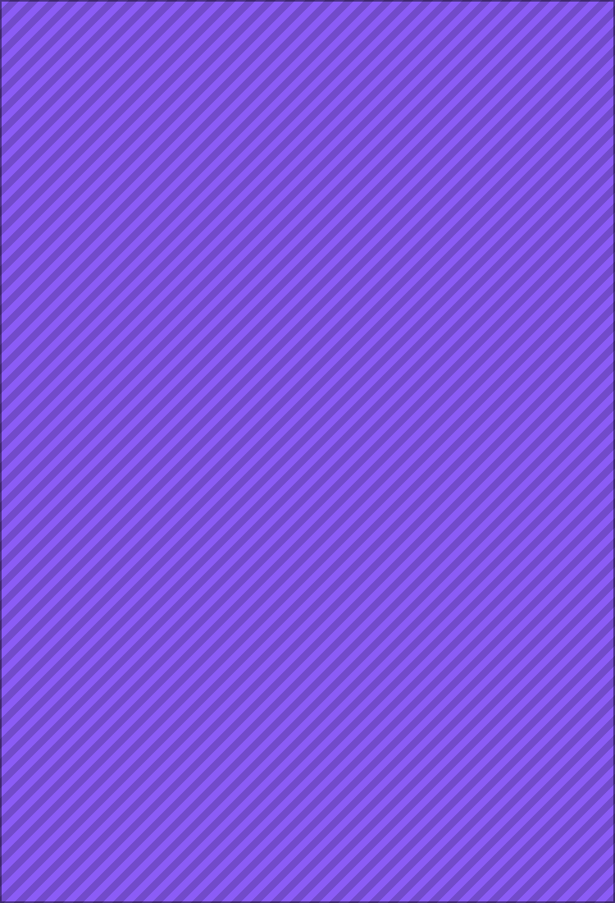

这个页面用真实的 DOM、真实的 naturalWidth、真实的
getComputedStyle 来验证 collectFromDocument。
断言会在所有图片真正加载结束后才开始跑（等待 load 事件，而不是固定等待时间），
结果会写入 window.__COLLECT_RESULT__ 与
window.__COLLECT_TESTS__，并打印在下方。

主图（srcset 有 400w / 800w 两个候选，应取 800w）

详情长图运行中…
运行中…